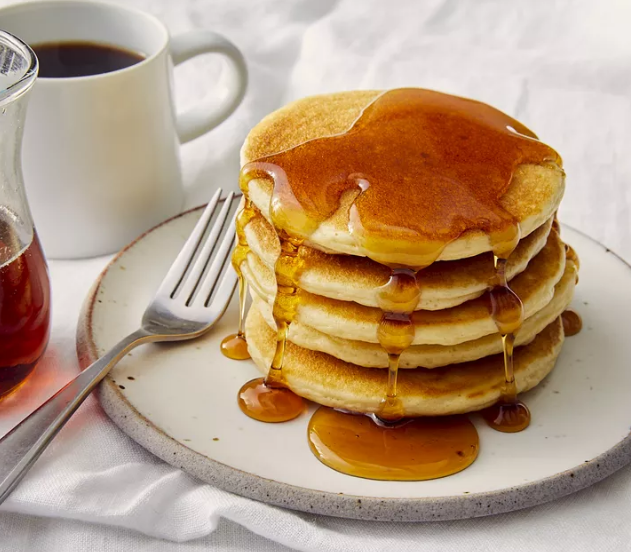

Pancake

Description
This vegan pancake recipe is the best of the vegan lot. The secret that these pancakes are not soggy like the other vegans ones is that it uses custard powder. This ensures the pancakes are cakelike and taste and look exactly like non-vegan pancakes. Mix fruit into the batter if you like. Serve hot with syrup or jam.
Ingredients
- 4 cups self-rising flour
- 1 tablespoon white sugar
- 1 tablespoon custard powder
- 2 cups soy milk
Steps
- In a large bowl, stir together the flour, sugar and custard powder. Mix in the soy milk with a whisk so there are no lumps.
- Heat a griddle over medium heat, and coat with nonstick cooking spray. Spoon batter onto the surface, and cook until bubbles begin to form on the surface. Flip with a spatula and cook on the other side until golden.